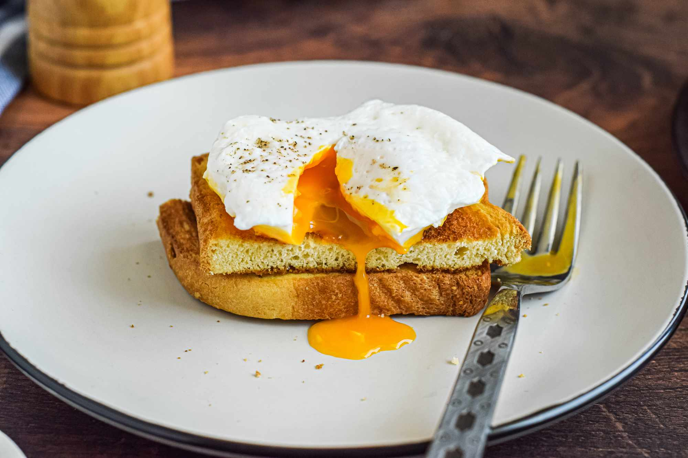

Poached Eggs

An Enticing Egg Dish, which you will love at first sight
A nutrition packed meal that will provide eneregy for the whole day.
It looks easy to make but will need a lot of effort to perfect.
Ingredients
- Eggs---2/3 pcs
- Your choice of bread
- Salt and Pepper to taste
- Butter---2 tbsp
- Vinegar---1 tbsp
- Water---3/4 cups
Directions
- Boil your water in a caserole.
- While waiting for the water to boil, slice your bread and apply some butter.
- Toast your bread
- Pour the vinegar into the water.
- Crack your eggs and put it into a small bowl
- Stir the water until a vortex have formed
- Add your eggs slowly into the swirling water.
- Take out your eggs after cooking it for at least 3 mins.
- Lay it on top of your toasted bread
- Add salt and pepper to taste.
Return to top
Back to the List